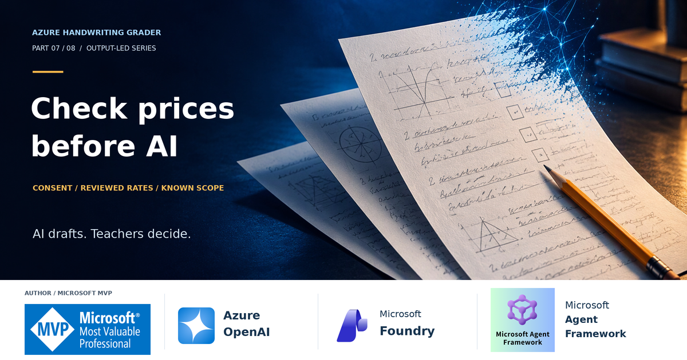
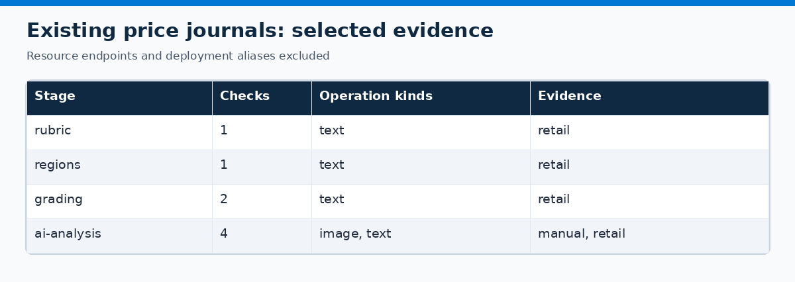

Fail-Closed Cost Governance: Retail Price Verification, Token Math, and Caching
Part 7 of 8 · MS MVP Technical Series · Azure Pricing API, Runtime Latches & Telemetry

Asking an LLM "how much will this cost?" is a recipe for silent budget surprises. Hardcoding stale per-token constants in Python isn't much better—regional Azure rates differ, long-context thresholds change per-token pricing, and image generation or hosted search tools carry completely separate meters.
In azure-handwriting-grader-skills, cost governance is fail-closed: zero guessed default rates, live verification against Microsoft's public Retail Prices API, explicit --confirm-cost consent before every paid stage, and honest UNPRICED (null) accounting whenever pricing or usage is incomplete.
As SKILL.md specifies:
**Cost governance**: Before every paid stage, preview target, transferred data and
estimated requests; independently verify current regional deployment rates and
obtain `--confirm-cost`.

Figure 1. Five-stage cost governance flow: offline template discovery, live Retail Prices API lookup, --confirm-cost consent, runtime RunPricingVerifier latch, and azure_usage.jsonl accounting.
1. Offline discovery vs. live Retail Prices API (fetch-pricing)
The system strictly separates model template generation from price discovery:
discover-models --endpoint URL --write-config config.yaml: Strictly offline. Writes a template with curated GA model recommendations (gpt-6.1-terra,gpt-6-luna,gpt-6.2-sol,gpt-6.2-astra) and refuses to overwrite existing files. It never probes Azure endpoints, quotas, or prices.fetch-pricing --region eastus --deployment-type global-standard: Queries Microsoft's unauthenticated public Retail Prices API (prices.azure.com). It sends zero credentials, endpoints, deployment aliases, or student data. The skill instructs the assistant to obtain the exact ARM region and billing type (global-standardvs.data-zone-standard) from the user rather than guessing from an endpoint URL.fetch-pricinghandles API pagination, filters for exactmeterName/skuName/effectiveStartDatematches, populatesshortandlong(long_context_threshold: 272000) token tiers plus30m/12hcache-write rates, and savespricing_sourcesprovenance (meter IDs, SKUs, and retrieval dates) into a new private config via--write-configwithout touching approval-bound files.- Manual pricing attestation: Unsupported model families (such as
analytics_image,embedding, orweb_searchhosted tools) cannot rely on auto-lookup. They require structured manual pricing evidence in YAML: matching family, region, billing mode, official Microsoft URL reference, declared units, and a timezone-bearing timestamp reviewed today (UTC).
2. The runtime RunPricingVerifier latch
Every paid command (extract-rubric, verify-rubric, suggest-regions, grade, regrade, ai-analysis, cluster-answers --confirm-cost) first runs an offline preview showing the target endpoint, deployments, data leaving the machine, and estimated request count. Only after the user explicitly consents does the operator pass --confirm-cost.
Even then, AzureClient in azure_ai.py performs an independent runtime check right before encoding images or calling responses.create()—even when invoked through Microsoft Agent Framework's ExecuteGrading Executor:
self._require_prices(model, tools=tuple(config.tools or ()))
RunPricingVerifier computes the SHA-256 fingerprint of config.yaml (aborting if the file changed mid-run) and binds the check to (endpoint, deployment, operation_kind, tools, image_size). Why does the binding key include operation_kind, tools, and image_size? Because a verified text-grading rate must never silently authorize an analytics_image call or a web_search hosted tool call.
On the first paid request of each run, the verifier refreshes public retail rates once per region/billing profile and compares every component (input, cached, output, cache_write) across both short and long tiers:
required = ("input", "cached", "output", "cache_write")
rates = self._rates({
"long_context_threshold": report["long_context_threshold"],
**entry["tiers"],
}, required, tiered=True)
reviewed = self._rates(row, required, tiered=True)
if (
reviewed["long_context_threshold"] != rates["long_context_threshold"]
or any(
reviewed[tier][part] != rates[tier][part]
for tier in ("short", "long") for part in required
)
):
raise PriceVerificationError("Current retail prices differ from reviewed rates")
If any rate is missing, stale, ambiguous, or changed since review—or if the retail lookup itself fails—the verifier latches self._blocked_reason:
self._blocked_reason = message
raise PriceVerificationError(message) from exc
Once latched, every subsequent call in that run is blocked immediately. The only remedy is to review a newly priced configuration and start a fresh run—never retry around the gate.

Figure 2. Selected fields from azure_price_checks.jsonl across rubric, region, grading, and AI analysis stages.
3. Token arithmetic without double counting (telemetry.py)
Azure Responses usage reports total prompt tokens (P), cached input tokens (C), cache-write tokens (W), and output tokens (O). A common billing bug is multiplying P by the ordinary input rate and adding C and W on top. Instead, TelemetryTracker._priced_cost() subtracts cached and cache-write tokens from ordinary input:
counts = {
"input": prompt_tokens - cached_tokens - cache_write_tokens,
"cached": cached_tokens,
"output": candidate_tokens,
write_key: cache_write_tokens,
"image": images_count,
}
cost = 0.0
for key, count in counts.items():
if count:
if not valid_rate(rates.get(key)):
return None
cost += count * float(rates[key]) / (1 if key == "image" else 1_000_000)
For tiered models, the selected tier (prompt_tokens > 272000 -> "long", else "short") prices the entire request, not just tokens above the threshold:
rates = rates.get("long" if prompt_tokens > threshold else "short", {})
Notice two more safeguards:
1. No reasoning-token double-counting: Diagnostic reasoning_tokens are already included in candidate_tokens (output) and are never added a second time.
2. Honest UNPRICED vs. $0.00: If any non-zero count lacks a valid rate, _priced_cost() returns None (cost_known=False), and get_summary() propagates null to any affected phase or overall total rather than reporting a misleading partial sum as $0.00.
4. Reporting scope honestly (cost_summary.json)
In our saved VTC example, grading/cost_summary.json reports:
{
"total_calls": 26,
"total_prompt_tokens": 26464,
"total_candidate_tokens": 15234,
"total_images": 6,
"total_cost_usd": 0.33436,
"unpriced_calls": 0
}

Figure 3. Actual cost_summary.json phase breakdown. US$0.33436 spans all six phases—batch grading itself was 5 logical calls (US$0.022736), while 6 infographics accounted for US$0.25453.
When presenting cost-report to educators or IT leads, SKILL.md enforces two communication rules:
1. Explain scope: grading/cost_summary.json accumulates rubric extraction, region suggestions, OCR, batch grading, AI analysis, and infographic generation—never label the grand total as "grading cost."
2. Azure billing is authoritative: Failed requests and individual SDK retry attempts are not fully represented in azure_usage.jsonl. Always reconcile recorded estimates against the institution's Azure billing portal.
5. Opt-in scoped caching (CachedGrader) & data governance
Response caching is disabled by default (caching.enabled: false) so student data is never persisted to a cache directory without explicit opt-in. When enabled, CachedGrader computes a deterministic cache key hashing:
- Transport namespace, Azure endpoint, and API version
- Deployment alias and agent role (annotation, marking_scheme, ocr, grading, moderation, ai_analysis)
- Exact prompt text, image SHA-256 digests, and question_ids (for region suggestions)
Two critical boundaries apply:
- verify-rubric is deliberately uncached: Search-grounded fact checking should reflect current web results, not stale cached snippets.
- Cache hits do not bypass governance: Even when a response is served from local cache, --confirm-cost consent (where required by the command) and full human review (review-grading / approve-*) remain mandatory. Similarly, store=False on Responses API requests is a request-level setting, not a substitute for institutional review of Azure data-retention, access-control, and compliance policies.
Next: Post-Approval Outputs: Analytics, Office Reports, Moodle/Email Delivery, and Cleanup.
Implementation references: price verification, usage accounting, and scoped caching.